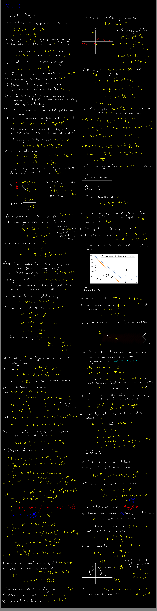
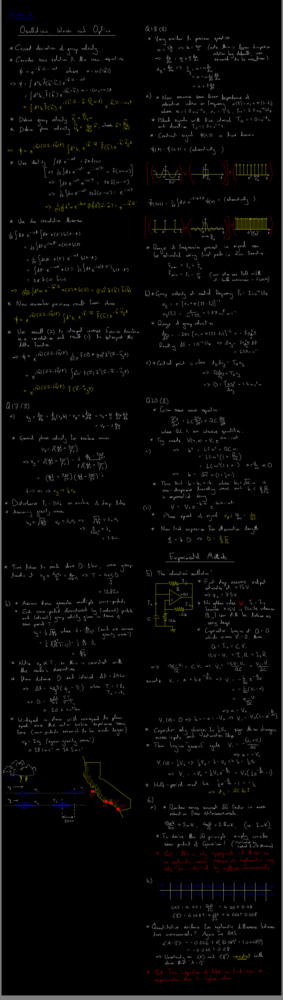
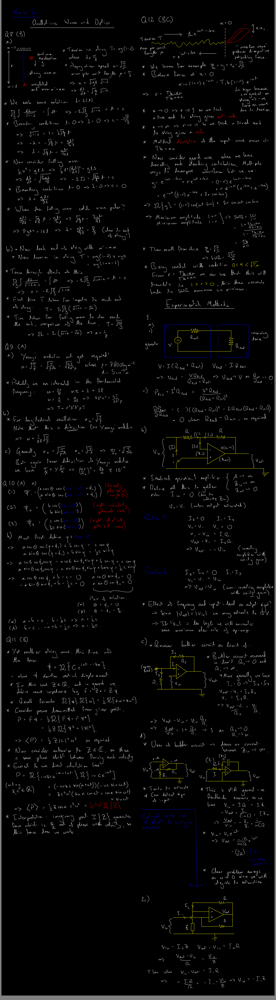

Teaching
This page is a "clearinghouse" for blackboards and other resources collected from undergraduate teaching, a process which has become much easier since Girton College graciously assisted with the purchase of a linux-compatible stylus input!
Condensed Matter Physics
The "Condensed matter physics" course introduces some ultra-low-energy effective theories, particularly those which we commonly encounter in our narrowly-defined regime of existence well below the Planck scale. In this regime it is proposed that there are such things as crystals. Among them are metals: these are actually interesting, and give rise to such interesting models as Fermi liquid theory. You will not learn about Fermi liquid theory in this course. Some of you may find this course interesting, but beware: the correct route of entry into the condensed matter world is via the quantum dynamics/TP route which is on offer in Part II. Basically, if the course is designed and run by someone at the TCM group, then it can be trusted, but otherwise you should be suspicious.
(Extra exam-related detritus)
Matrix mechanics and hybridisation for a double potential well, spin-orbit interaction (relativistic correction) and splitting of the quantum harmonic oscillator (this feels incorrect to me, please check).
Lecture 4 (16:00-18:00 Monday 22nd May 2023)
Please remember that this one will be online! -- (and it was online!)
Bloch's theorem and quantisation in a periodic background potential, valence and conduction bands, band splitting, valence and metallic/insulator character, hole states, effective and anisotropic mass, dopants and effective hydrogen-like states within insulators, semiconductors, p/n junctions, potential bias, recombination current.

Factorisation of spatial and spin states of indistinguishable particle pairs, spatial exchange symmetry and Coulombic pair-interaction, Bloch's ansatz for the periodic ring potential.
Lecture 3 (14:00-16:00 Monday 17th May 2023)
Unfortunately, the deadline for my Master's students to submit their theses was at 16:00 BST today, and that led to a few (perfectly avoidable) crises throughout the morning. As a result, I failed to solve this week's solutions within my usual morning window. It is very unlikely I will return to this now, so please let me know if any of the problems need attention!
Lecture 2 (14:00-16:00 Monday 8th May 2023)
Diatomic phonon dispersion relations, reduced periodicity and folding of the Brilloin zone, splitting of acoustic and optical modes, crystal momentum. Debye theory, Dulong-Petit law, Planck distribution, bosonic occupancy of phonon modes, phonons as non-relativistic quantum field theories, phonon dispersion relations of sodium chloride and a silicon germanium superlattice, using normal mode intuition and reduced masses to infer splitting hierarchies.
Lecture 1 (15:00-16:00 Thursday 27th April 2023)
Please remember that this one will be online! -- (and it was online!)
Introduction to the Bravais lattice, crystallographic groups, Miller indices, cells and primitive cells, the reciprocal lattice, monatomic phonon theory in one dimension (quasiparticle excitations).
Quantum Physics
The "Quantum physics" course offers an introduction to the non-relativistic quantum theory. Little or no attention is given to the axioms of quantum theory. Lots of emphasis is placed on the position ("wave function" or "quantum wave") representation for massive particles, which is mostly useless for physics in general and actively harmful for quantum field theory (QFT) in particular (there are some applications within quantum chemistry and experimental solid state physics). There is an introduction to the quantisation of orbital and intrinsic angular momentum, somehow without reference to the orthogonal or Lorentz groups.
Lecture 8 (13:00-15:00 Thursday 16th March 2023)
Please remember that this one will be online! -- (and it was online!)
Review. Squeezed states of the quantum harmonic oscillator, anisotropic quartic potential, angular momenum operators as the generators of rotations.
Lecture 7 (14:00-16:00 Thursday 9th March 2023)
Please remember that this one will be online! -- (and it was online!)
Review. Prompt measurements of incompatible observables in succession, Baker-Campbell-Hausdorff formula, coherent states of the quantum harmonic oscillator as eigenstates of the creation and annihilation operators with complex eigenvalues and minimum uncertainty.
Lecture 6 (14:00-16:00 Thursday 2nd March 2023)
Quantum spin, total angular momentum and Clebsch-Gordon coefficients, generation of spin, orbital and total angular momentum multiplets by raising and lowering, Stern-Gerlach apparatus, pure multi-particle states and the (non-relativistic limit of the) spin statistics theorem, degeneracy.
Lecture 5 (14:00-16:00 Thursday 23rd February 2023)
Spherical polar coordinate basis for angular momentum operators, angular momentum ladder operators, orbital angular momentum and azimuthal quantum numbers, orbitals of a hydrogen-like atom, expected positions and distributions of the electron, spherical harmonics, separable Hamiltonia, higher-dimensional quantum harmonic oscillator, generalised conjugate quantum numbers and the symplectic form.

Lecture 4 (14:00-16:00 Thursday 16th February 2023)
Changes of basis in the quantum Hilbert space, time evolution of non-stationary states and the expectation values of operators which are not compatible with the Hamiltonian. Creation and annihilation operators in the context of the quantum harmonic oscillator, Ehrenfest's theorem in the Schrödinger picture, time evolution operator, angular momentum operator. Hamiltonian dynamics and canonical quantisation, Groenwold's theorem.
Lecture 3 (14:00-16:00 Thursday 9th February 2023)
Further discussion of quantum wells for the non-relativistic single particle. Existence criteria for bound states. Quantum harmonic oscillator and the classical limit. Linear operators as quantum operators. The parity operator. Hermitian operators. Equivalence of position and momentum representations of the momentum operator, and polynomials constructed from the momentum operator.
Lecture 2 (14:00-16:00 Thursday 2nd February 2023)
Ideal square wells (finite and infinite), continuity and boundary conditions for the wave function, probability current in one spatial dimension, correspondence principle, classical vs quantum expectation values.
Lecture 1 (14:00-16:00 Thursday 26th January 2023)
Photoelectric effect, application of Heisenberg uncertainty principle to classical mechanics, Bohr's quantisation criterion and the fine structure constant, wave function normalisation, non-relativistic massive particle dispersion, the momentum operator. The mock exam from January 18th is also discussed.

Oscillations, Waves and Optics
The "Oscillations, waves and optics" course is an ill-conceived collection of engineering concepts, written for 2nd-year undergraduates. There are two important things which are introduced in disguise, namely hyperbolic systems and dispersion. Both of these ideas play a role in actual physics. The small "Experimental methods" course is taught interstitially with this content: the name speaks for itself.
Have a great Christmas break, everyone!
Lecture 8 (14:00-16:00 Thursday 1st December 2022)
Lecture 7 (14:00-16:00 Thursday 25th November 2022)
Lecture 6 (14:00-16:00 Thursday 17th November 2022)
Please remember that this one will be online! -- (and it was online!)
Lecture 5 (14:00-16:00 Thursday 10th November 2022)
Lecture 4 (14:00-16:00 Thursday 3rd November 2022)

Lecture 3 (14:00-16:00 Thursday 27th October 2022)
Lecture 2 (14:00-16:00 Thursday 20th October 2022)
Note we did not complete a discussion of the "shunt" modification to ameliorate the low-frequency saturation of the integrator.

Lecture 1 (14:00-16:00 Thursday 13th October 2022)
Repeat: 15:30-18-30 Tuesday 17th October 2023
Oscillating systems, complex notation, response functions, power transfer, \(Q\)-factor, amplitude, velocity and acceleration response, resonance.

2022 mock exam
Two of the questions are copied from Tripos papers, one is sprinkled in for extra seasoning.
The blackboard from the post-mock session.

Methods in Theoretical Physics
The "Methods" were meant to be a series of informal discussions within the research group during the period where we had some great summer students with us. They tailed off after only a few weeks, but could perhaps be revivified in 2023 if someone wants to contribute content?
Lecture 4 (Einstein and Jordan frames)

Lecture 3 (conformal field thory)

Lecture 2 (Virasoro algebra)

Lecture 1 (constrained systems)

Relativistic Astrophysics and Cosmology
The "Relativistic astrophysics and cosmology" course is the Physics Department's idea of applied relativity, presented to fourth-year undergraduates. There are some good patches in the course, which was first constructed many years ago, and it is now improving with continued efforts by Dr. Handley.
Lecture 4
Lecture 3

Note on the "chirp mass"

Note on "optical depth"

Mathematics for Natural Sciences
No curated content for this page yet!
Particle and Nuclear Physics
No curated content for this page yet!
Thermal and Statistical Physics
No curated content for this page yet!
Relativity
No curated content for this page yet!
Condensed Matter Physics
No curated content for this page yet!
Quantum Physics
No curated content for this page yet!
And here is some further PGCE content, the set question is that Katie (clearly a fool) is asserting that there is no gravity in space.
Someone I know was applying for a PGCE in physics, here are some slides for a five-minute mini-lesson on the physics of waves.
</body>